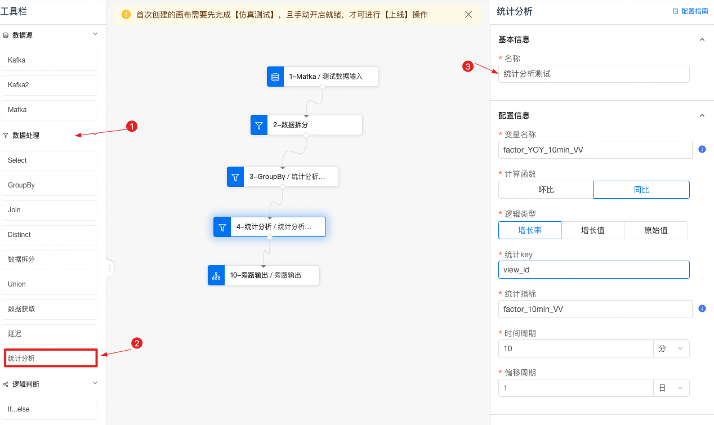

说明：画布-统计分析
一、背景
统计分析组件主要针对一些数据统计类的计算函数做了整体产品化，目前仅支持同比和环比的逻辑，降低用户配置该部分计算逻辑时的操作成本。
二、名词解释
同比：指与历史同期的一个统计段进行对比。反映的是事物发展的相对情况。比如，2022年3月与2021年3月，今天与前天。
环比：指与相连续的上一个统计周期进行对比。反映的是事物逐期发展的情况。比如，2022年1月与2021年12月的数据，今天与昨天，2022年与2021年。
区别1：核心区别：是否连续。同比是不连续的，环比是连续的。
区别2：同比前一般会加限定词。2022年3月的月活与2021年3月的同比。如果是环比，可以直说2022年3月环比提高了多少。
增长率是指两个时间点之间的数据增长量与前一个时间点的数据值的比率。增长率可以帮助我们了解数据的增长速度和趋势。例如，如果某个产品在去年销售了1000件，今年销售了1200件，那么增长率为20%。
增长值是指两个时间点之间的数据增长量。增长值可以帮助我们了解数据的绝对变化量。例如，如果某个产品在去年销售了1000件，今年销售了1200件，那么增长值为200件。
原始值是指某个时间点的数据值。原始值可以帮助我们了解数据的绝对水平。例如，某个产品去年销售了1000件
三、计算逻辑说明
|
函数名称 |
逻辑 |
|---|---|
|
同比 |
【指标逻辑】近10分钟的流量与昨天同时间的流量同比>50%： 【数据信息】 2023.5.30 11:00-11:10 流量为a 2023.5.31 11:00-11:10 流量为b 【计算公式】增长率：(b-a)/a ；增长值：b-a；原始值：a |
|
环比 |
【指标逻辑】近10分钟流量环比>50% 【数据信息】11:00-11:10 流量为a 11:10-11:20 流量为b 【计算公式】增长率：(b-a)/a ；增长值：b-a；原始值：a |
四、操作指南
|
操作说明 |
页面 |
|---|---|
|
 |
五、配置示例
策略逻辑：近10分钟的流量与昨天同时间的流量同比>50%
配置实现拆分：
（1）“近10分钟的流量统计” 指标-->近线groupby组件/累计因子
（2）“近10分钟的流量与昨天同时间的流量同比” 指标-->近线统计分析组件
（3）“近10分钟的流量与昨天同时间的流量同比>50%”规则-->近线规则集合组件+规则
六、FAQ
Q1.统计指标什么时候用近线groupby组件，什么时候用累计因子？
A：近线groupby组件 仅能支持1天以内的时间窗口统计，若统计时间超过1天以上，建议使用累计因子。累计因子为滑动时间窗口计算逻辑，若统计时间超过1天且计算逻辑为滚动窗口则需要联系Zeus RD沟通。
Q2.近线统计指标使用累计因子，但累计因子依赖的累计事件流量没有接入过Zeus 怎么处理？
A：请联系Zeus RD